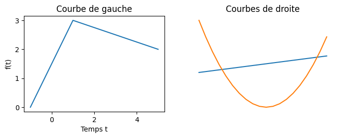

Utiliser des objets en python
Lorsque l'on écrit du code python, on ne fait que manipuler des objets.
Les objets sont partout
Les entiers, les chaines de caractères, les listes et même les fonctions sont des objets :
i = 43
s = "coucou"
l = [1, 2, 3]
f = lambda x: x - 1On peut utiliser des objets via des opérateurs ou des fonctions. Par exemple :
print(f(i))Que fait le code précédent ?
corrigé
corrigé
Dans un interpréteur :
>>> i = 43
>>> s = "coucou"
>>> l = [1, 2, 3]
>>> f = lambda x: x - 1
>>> print(f(i))
42
Il affiche le résultat de la fonction f (qui rend un entier valant son paramètre d'entrée moins 1) avec comme paramètre l'entier associé à la variable i (un entier valant 43).
Mais un objet est plus que ça. Il contient à la fois des données (les différents caractères d'une chaîne de caractères par exemple) et des méthodes permettant d'opérer dessus. Par exemple :
print(s.upper())Que fait le code précédent ?
corrigé
corrigé
Dans un interpréteur :
>>> i = 43
>>> s = "coucou"
>>> l = [1, 2, 3]
>>> f = lambda x: x - 1
>>> print(s.upper())
COUCOU
Il affiche le résultat de la méthode upper appliquée à l'objet associé à la variable s.
Les méthodes sont spécifiques à des types d'objets particulier, ainsi le code suivant ne fonctionne pas, la méthode upper n'est pas définie pour les entiers :
print(i.upper())Que fait le code précédent ?
corrigé
corrigé
Dans un interpréteur :
>>> print(i.upper())
Traceback (most recent call last):
File "<python-input-12>", line 1, in <module>
print(i.upper())
^^^^^^^
AttributeError: 'int' object has no attribute 'upper'Python rend une erreur. Nous comprendrons sa signification profonde plus tard, pour l'instant cela nous indique juste que la méthode upper n'existe pas pour les entiers : 'int' object has no attribute 'upper'
Les méthodes sont ainsi associées au type de l'objet. Ce sont des fonctions définis dans l'espace de nom de la classe associé. Ainsi comme le type d'une chaîne de caractères est str en python :
>>> type(s)
<class 'str'>On peut tout à fait écrire :
print(str.upper(s))Où on utilise directement la fonction upper des chaînes de caractères. Remarquez que dans ce cas il faut expliciter le paramètre.
Une classe :
- permet de créer un type d'objet (une structure de donnée précise)
- définit les opérations (méthodes) utilisables par ces objets.
Un objet issu d'une certaine classe :
- possède la même structure de données que les autres objets de la classe mais les valeurs de celle-ci lui sont uniques : ses attributs
- possède un lien vers les méthodes (définies dans sa classe) qu'il peut utiliser via la notation pointée :
objet.méthode(paramètre_1, ..., paramètre_n)
À retenir
La programmation objet n'a pas pour but de révolutionner votre façon de programmer. Elle permet juste de bien mettre en œuvre les paradigmes de développement que l'on a vus jusqu'à présent. Il est fortement conseillé de coder objet car :
- cela favorise la factorisation du code (on ne se répète pas) : on ne définit ses méthodes qu'une seule fois dans les classes
- lisibilité avec la notation
.: on sait clairement à qui s'applique telle ou telle méthode - compartimentation du code : chaque partie du code et chaque opération est compartimentée, ce qui permet de les tester et des améliorer indépendamment du reste du code.
- plutôt que de créer un gros programme complexe, on crée plein de petits programmes indépendants (les objets) qui interagissent entre eux.
Ces principes sont mis en œuvre de façon différentes selon les langages mais on retrouvera toujours ces notions.
Exemples de classes en python
Ce qui caractérise un objet est ce qu'on peut faire avec, c'est à dire ses méthodes. Une classe regroupe un ensemble de méthodes permettant de résoudre un problème spécifique. Que ce problème soit lié au type de données (chaîne de caractères, entier, ...) qu'à leurs usages (mesurer le temps, graphiques, ...).
Voyons quelques exemple de classes python et leurs usages.
Chaîne de caractères
Les chaines de caractères sont des objets de la classe (str) :
>>> type("une chaîne")
<class 'str'>Les méthodes définies dans la classe str, comme capitalize() par exemple sont utilisables par tous les objets de la classe str (dans l'exemple ci-après par l'objet "coucou" et l'objet "toi") :
>>> "coucou".capitalize()
'Coucou'
>>> "toi".capitalize()
'Toi'La notation pointée permet de dire que c'est la méthode à droite du . que l'on cherche dans l'objet à gauche du point.
Le code suivant produit une erreur. Pourquoi ?
>>> capitalize("coucou")
Traceback (most recent call last):
File "<stdin>", line 1, in <module>
NameError: name 'capitalize' is not defined
solution
solution
C'est la méthode définie dans la classe str qui s'appelle capitalize qui existe...
Le résultat est différent lorsque l'on applique la méthode capitalize à la chaîne de caractères "bonjour" ou à la chaîne de caractères "toi" car ces deux chaînes de caractères, bien que de la même classe (str), sont différents : dans l'un il y a la chaîne "bonjour", dans l'autres la chaîne "toi".
Remarquez que l'application de la méthode ne change pas sa valeur :
>>> s = "coucou"
>>> s.upper()
'COUCOU'
>>> print(s)
coucouPour conserver le résultat de la méthode, il faut le placer dans une autre variable :
>>> s_prim = s.upper()
>>> print(s_prim)
COUCOU
>>> print(s)
coucou
Enfin, une méthode peut avoir des paramètres comme la méthode str.center :
>>> print(s.center(25, "*"))
**********coucou*********Et même rendre autre chose que son type d'origine comme la méthode str.count :
>>> print(s.count("c"))
2La notation pointée est très pratique puisque l'on peut chaîner les instruction. Par exemple, considérons la ligne de code :
"coucou".upper().count("U")Pour comprendre son exécution, on analyse la ligne :
- on exécute la méthode
countde l'objet à gauche du., c'est à dire"coucou".upper(). Attention C'est bien toute la partie gauche, pas seulement jusqu'au.suivant. - l'objet
"coucou".upper()est le résultat de la méthodeupperappliquée à l'objet à gauche du., c'est à dire la chaîne de caractères"coucou". - le résultat de
"coucou".upper()est ainsi égal à l'objet"COUCOU" - donc
"coucou".upper().count("U")est égal à"COUCOU".count("U")qui vaut 2
Entiers
Les entiers sont aussi des objets d'une classe : int.
>>> type(1)
<class 'int'>Contrairement à la classe str, la classe int ne définit pas de méthode mais des opérations. Par exemple __add__ définit l'addition d'un entier par un autre objet. C'est pratique que tout soit défini dans la classe , cela nous permettra à nous aussi de faire nos propres additions.
Les trois écritures sont identiques en python, mais bien sur, nous préférerons la première, bien plus simple à écrire et à comprendre :
1 + 2int.__add__(1, 2)(1).__add__(2)
Remarquez que l'opération + n'est pas identique pour 1 + 2 et 1.0 + 2. Dans le premier cas c'est l'addition définie dans int qui est utilisé, dans le second cas c'est celle définie dans float.
En python les méthodes qui commencent et finissent par deux underscores (le caractère _, aussi parfois improprement appelé tiret-du-huit car c'est ce caractère qui est sous le 8 pour des claviers français PC (ce n'est pas vrai sur mac et encore moins pour d'autres types de claviers)) sont des méthodes utilisées par python dans des cas spécifiques, on ne les utilisera quasi-jamais de façon explicite.
Listes
Les entiers et les chaînes de caractères sont des objet dit immutable c'est à dire qu'aucune de leurs méthodes ne les modifient : elles ne font que rendre de nouveaux objets. Ce n'est pas le cas des listes.
>>> l = [1, 2, 3]
>>> l.extend([4, 5, 6])
>>> print(l)
[1, 2, 3, 4, 5, 6]
La liste l est modifiée par la méthode list.extend. Le fait qu'une méthode modifie ou pas l'objet passé en paramètre n'est pas réglementé. Certaines le font d'autres non :
>>> l = [1, 2, 3]
>>> l + [4, 5, 6]
[1, 2, 3, 4, 5, 6]
>>> print(l)
[1, 2, 3]
Mais souvent les méthodes qui ne rendent rien (donc qui rendent None) modifient les objets :
>>> l = [1, 2, 3]
>>> print(l.extend([4, 5, 6]))
None
Terminons cette partie par deux petit exercices pour voir si vous avez compris :
Que produit le code suivant :
[1, 2, 3] + "nous irons au bois"
corrigé
corrigé
Une erreur :
>>> [1, 2, 3] + "nous irons au bois"
Traceback (most recent call last):
File "<python-input-39>", line 1, in <module>
[1, 2, 3] + "nous irons au bois"
~~~~~~~~~~^~~~~~~~~~~~~~~~~~~~~~
TypeError: can only concatenate list (not "str") to list
Car on ne peut additionner que deux listes.
Que produit le code suivant :
[1, 2, 3] + "nous irons au bois".split()
corrigé
corrigé
Là ça marche car le résultat de str.split est une liste :
>>> [1, 2, 3] + "nous irons au bois".split()
[1, 2, 3, 'nous', 'irons', 'au', 'bois']Complexes
Saviez-vous qu'il y a une classe pour les complexes ?
>>> print(1j ** 2)
(-1+0j)
>>> z = 2 - 1j *0.5
>>> print(z)
(2-0.5j)
>>> print(type(z))
<class 'complex'>
Un complexe se caractérise par sa partie réelle et sa partie imaginaire. Comment y accéder?
>>> x = z.real
>>> y = z.imag
>>> print(x, y)
2.0 -0.5
>>> print(type(x), type(y))
<class 'float'> <class 'float'>
Comment calculer le conjugué ?
>>> zc = z.conjugate()
>>> print(zc, type(zc))
(2+0.5j) <class 'complex'>
Dates
Ça existe et c'est très pratique !
import datetime
année_scolaire = datetime.datetime(day=3, month=9, year=2024, hour=9, minute=0, second=0)
print(type(année_scolaire))
print(année_scolaire)Le code précédent va afficher :
<class 'datetime.datetime'>
2024-09-03 09:00:00Les attributs de la date sont accessibles :
print(année_scolaire.day)
print(année_scolaire.month)
print(année_scolaire.year)
print(année_scolaire.hour, année_scolaire.minute, année_scolaire.second)Qui va afficher :
3
9
2024
9 0 0Enfin, on peut prendre la date actuelle :
now = datetime.datetime.today()
print(type(now))
print(now)Ce qui produira :
<class 'datetime.datetime'>
2025-03-19 10:49:34.921872Et on peut manipuler des dates comme des nombres :
d = now - année_scolaire
print("Mon année scolaire a commencé depuis", d.days, "jours et", d.seconds, "secondes.")Bref, l'usage de d'objets et de classes permet une utilisation intuitive de concepts compliqués à implémenter
N'essayez pas de faire des manipulation de dates à la main, il y a plein d'exceptions qui fait que c'est l'enfer à faire correctement.
Graphiques
Là aussi, ce sont des objet et des classes :
import matplotlib.pyplot as plt
fig, axes = plt.subplots(1,2, figsize=(8, 2.5))
axes[0].plot([-1, 1, 5], [0, 3, 2])
axes[0].set_xlabel('Temps t')
axes[0].set_ylabel('f(t)')
axes[0].set_title('Courbe de gauche')
axes[1].plot([x for x in range(-10, 10)])
axes[1].plot([x ** 2 - 50 for x in range(-10, 10)])
axes[1].set_axis_off()
axes[1].set_title('Courbes de droite')
print(type(fig))
print(type(axes), axes.shape)
print(type(axes[0]))
plt.show()
Qui va écrire dans le terminal :
<class 'matplotlib.figure.Figure'>
<class 'numpy.ndarray'> (2,)
<class 'matplotlib.axes._axes.Axes'>
Et ouvrir une nouvelle fenêtre avec le graphique suivant :
